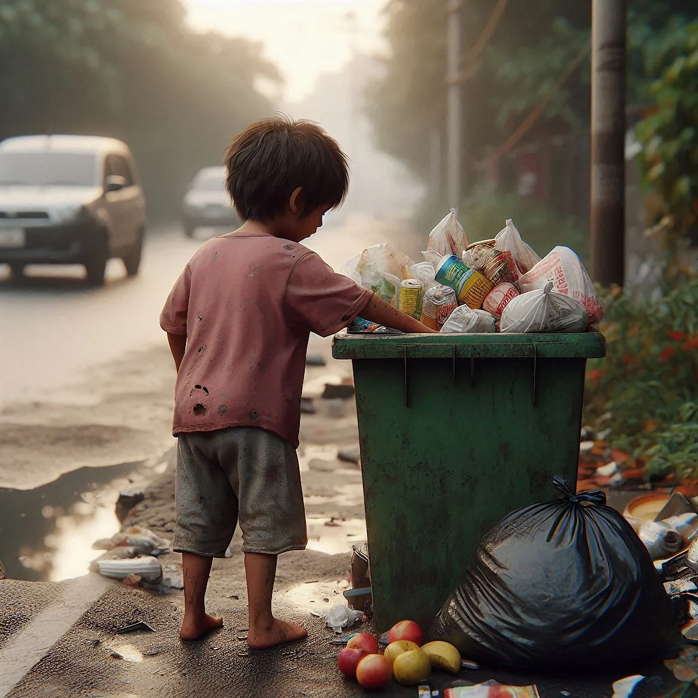

HELP & SUPPORT
We provide assistance and support to those in need, ensuring they have access to basic necessities and a helping hand during difficult times.
Starve Free World
Our goal is to eradicate hunger by promoting sustainable food practices and ensuring everyone has access to nutritious meals.
Helping Hand
We extend our help to communities, offering resources and support to improve their quality of life and create a better future.